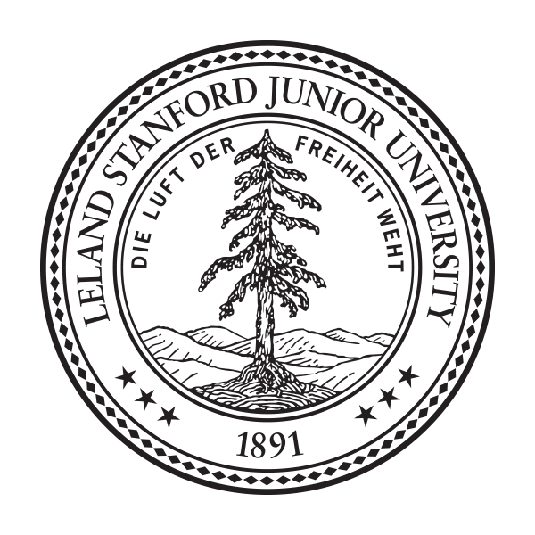

Objective:
Stanford graduate skilled in analytical research, product management and content editing, looking to learn from and contribute to the success of an organization.
Education:
Combined Major in Philosophy & Religious Studies
Concentration in Oceanic and Atmospheric Sciences
Relevant Experience:
Computer Science Background -
Core CS curriculum at Stanford. These courses provided an extensive experience in systems architecture, memory management and performance optimization. I am proficient in HTML, CSS and (soon to be) Javascript.
Pre-Colonial & Contemporary Philosophy -
Series of courses focused on philosophical ideologies and the sociological implications of their effects on human history and behavior. Maintaining a concentration in pre-modern Taoist, Existential and Romantic philosophies, I've gained a unique perspective on different theories of ontology and sociology, acquiring insight into historical movements and their relation to both ancient and contemporary modes of thought. Through this program, I've been given thorough experience in critical analysis, writing and editing.